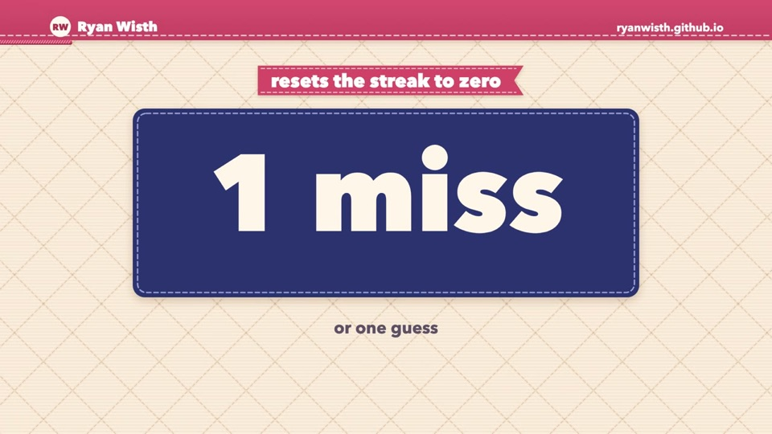
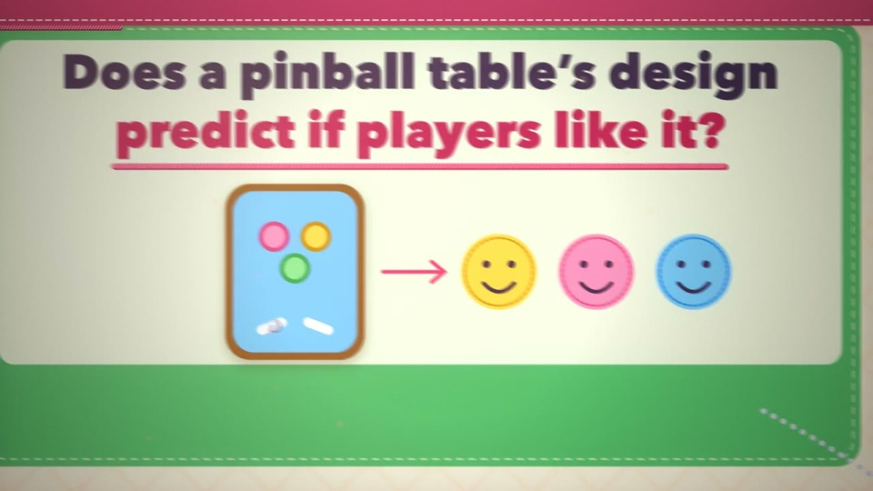
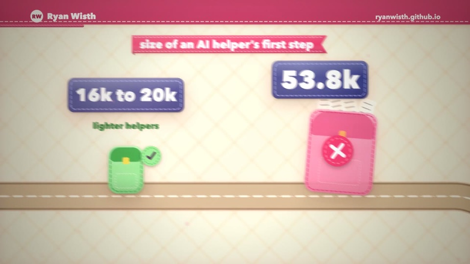

15Ryan Wisth · projects built with AI
I build useful tools with AI, and I test every one.
Narrated film, 38 s. Press ♪ for sound.
Read the script
15 projects, each one built with AI, and each one tested. AI feedback, handwritten onto a paper tablet. One tap checks up to 24 pages. A 3D family tree you can turn, with a map of moves, all in one small file. And a private phone app to follow and answer AI chats running on a computer. 12 of the 16 desktop features work there. In a fact-checking routine, new problems found fell from 27% to 7%. The code for 13 is public on GitHub. Pick a project below.
Here are 15 of my projects. For each one, I decided what it had to do, AI wrote most of the code, and I tested it before calling it finished. One of them cut each AI helper’s starting cost by about two thirds. Start with these three.
Featured
Start with these three

AI on my own devices
AI feedback, handwritten onto a paper tablet
My reMarkable paper tablet feels like writing on paper. Tap one button and an AI checks the handwritten work, then writes its notes on the page in pen strokes, up to 24 pages at a time. The original writing is never changed. I also worked out how its color screen draws, so my own code can use it.
My rules Never change the original writing · runs only when the button is tapped · look before changing anything
See the project →
Things I use
A 3D family tree that opens from one file
A family tree you can turn and explore in 3D, with a map of where each family moved. It all fits in one small file that opens without the internet or extra software. Try the demo, filled with 420 made-up people.
My rules One file · still easy to read with hundreds of people · safe to share
See the project →
Things I use every day
Claude Code, run from my iPhone
Claude Code is an AI assistant that does real work on my Mac: it edits files, runs commands and asks me questions as it goes. I built my own private iPhone app to follow every chat live, answer its questions, reply, and start new work from anywhere, while the Mac does the work. 12 of the 16 desktop features also work on the phone.
My rules Built by me, on my own network · show the chats I already have · a reply continues the same chat
See the project →12 more projects
Things I use
 A study app built around mistakesRechecks what you learned after 3, 7 and 21 days
A study app built around mistakesRechecks what you learned after 3, 7 and 21 days
A study app where one wrong answer resets your streak66 sample questions, every answer checked by a program Dark mode for any website in Safari6 color themes matched closely to real sites; asks for only 1 permission
Dark mode for any website in Safari6 color themes matched closely to real sites; asks for only 1 permission
Checking AI’s work
 Making AI work easy to check3 tools; 517 statements written by AI, each checked and recorded
Making AI work easy to check3 tools; 517 statements written by AI, each checked and recorded A family tree built only from real recordsEvery fact quotes its record; 31 weak guesses were thrown out
A family tree built only from real recordsEvery fact quotes its record; 31 weak guesses were thrown out A fact-checking routine that stopped slippingUsed daily; new problems found fell from 27% to 7%
A fact-checking routine that stopped slippingUsed daily; new problems found fell from 27% to 7%
A study set up so it could prove me wrong9 predictions written down first, then tested on 94 real pinball tables
Keeping AI costs down
 Finding where my AI spending wentOne cause: 482 of 662 AI helpers started far bigger than needed
Finding where my AI spending wentOne cause: 482 of 662 AI helpers started far bigger than needed
Spending rules an AI can’t skipUsed daily; each AI helper now starts at about a third of the old size Long AI jobs that check the bill firstConfirms who pays before starting; stops at $20 a round
Long AI jobs that check the bill firstConfirms who pays before starting; stops at $20 a round
 A private AI assistant on my laptop
A private AI assistant on my laptop Giving the AI on my laptop tools to use
Giving the AI on my laptop tools to useHow I build each one
I decide
the goalthe planthe tests it must pass
AI writes
most of the code
I test it
before I call it done